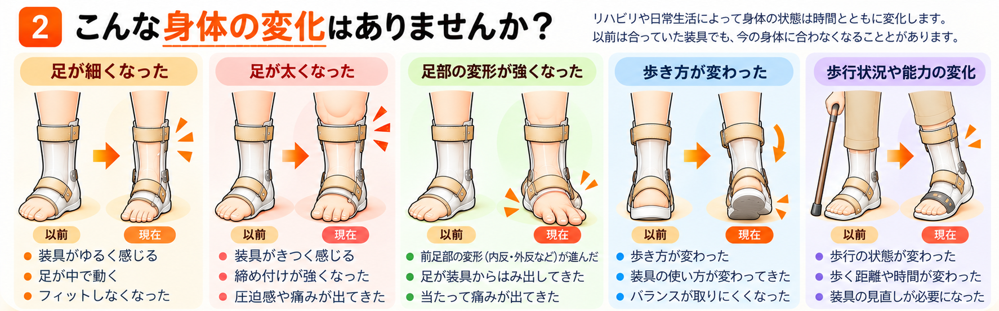
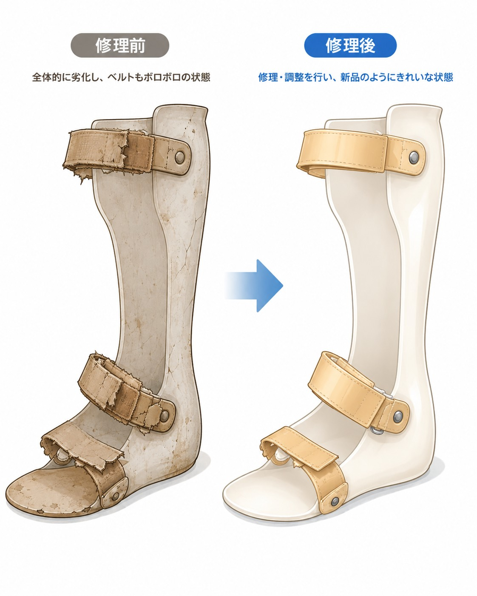
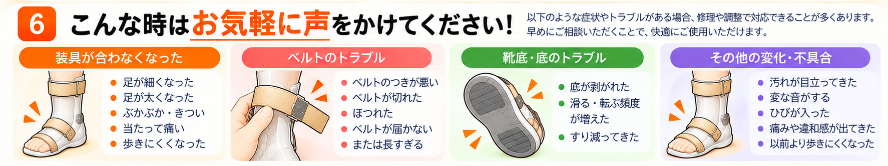

短下肢装具（プラスチック型）
約1年6か月
作り直しの目安のひとつです。身体の変化や装具の状態によって時期は前後します。
ORTHOTIC REPAIR & ADJUSTMENT
身体の変化や日々の使用によって、装具の状態も少しずつ変わります。オータス補装具工房では、今の状態を確認し、修理・調整で対応できるか、作り直しが必要かを一緒に考えます。

使用年数だけで決まるものではありません。身体の状態や装具の劣化によって、早めの見直しが必要になる場合があります。
作り直しの目安のひとつです。身体の変化や装具の状態によって時期は前後します。
作り直しの目安のひとつです。使用状況や身体の状態によって早めの見直しが必要な場合があります。
※作り直しの時期や修理の可否は、装具の種類・状態・身体の変化などによって異なります。
リハビリや日常生活によって身体の状態は変化します。以前は合っていた装具でも、今の身体に合わなくなることがあります。

壊れているからといって、すぐに作り直しとは限りません。状態によっては修理や調整で使い続けられる場合があります。

装具の破損・劣化だけでなく、身体への当たりやフィット感、歩きやすさなども含めてご相談ください。
まず状態を確認し、今の装具に必要な対応を一緒に考えます。
「どこが気になるか」「どのような装具か」を、分かる範囲でお聞かせください。
装具の破損・劣化や身体への適合などを確認します。
修理や調整で対応できる場合は、必要な内容をご案内します。
対応が難しい場合は、新しい装具についてご相談します。
装具の種類や作製の経緯によって、利用できる制度や手続きが異なります。
治療用装具を作製した後、身体障害者手帳を取得された方は、補装具費支給制度を利用できる場合があります。修理や作り直しも、装具の状態や制度上の要件によって手続きが異なります。
自治体の障がい福祉担当窓口などへの確認が必要になる場合があります。必要な書類や手続きについては、自治体へご確認ください。

「これくらいなら大丈夫かな？」と思うことでも、早めの相談で修理や調整で対応できる場合があります。那覇市で補装具の修理・調整・作り直しをご検討の方はお気軽にご相談ください。